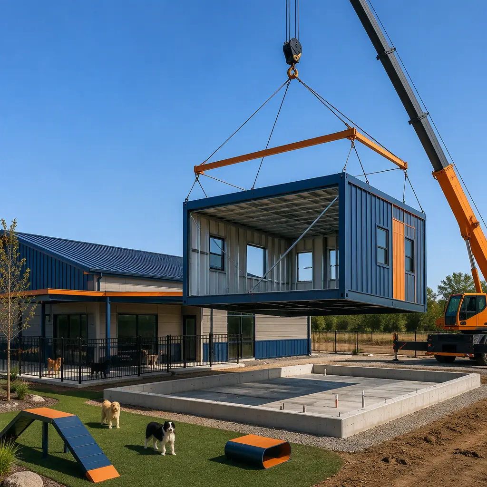
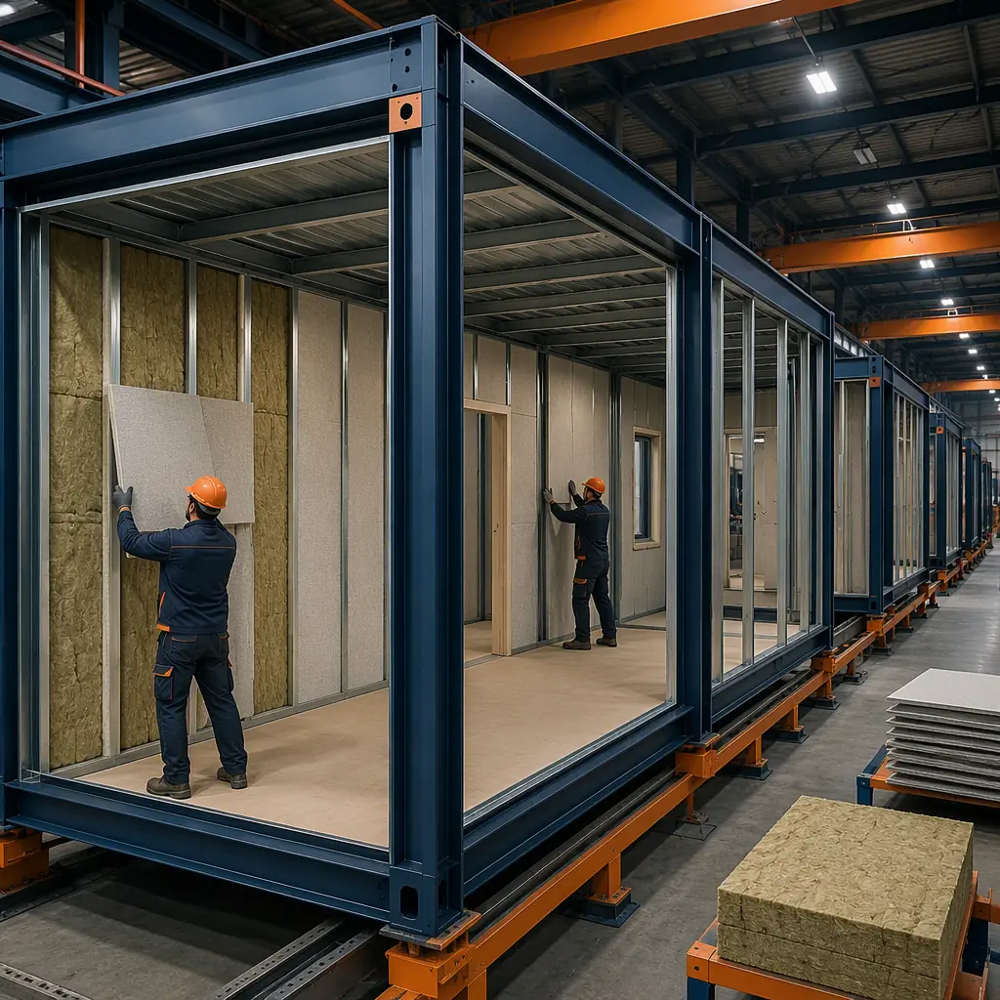
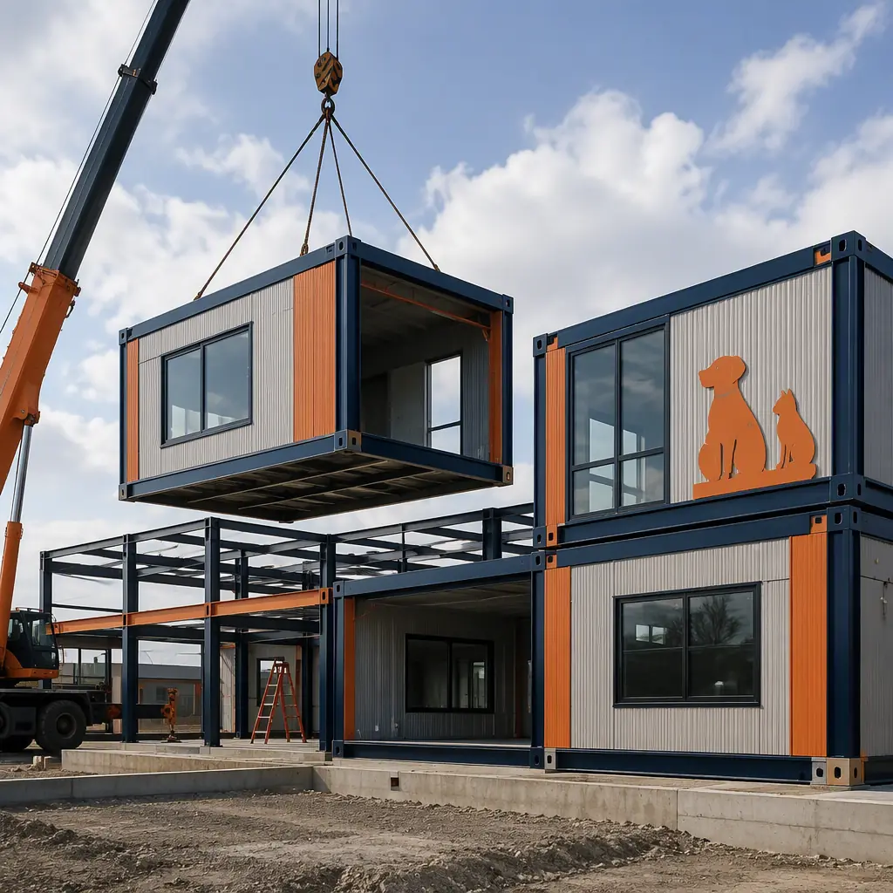
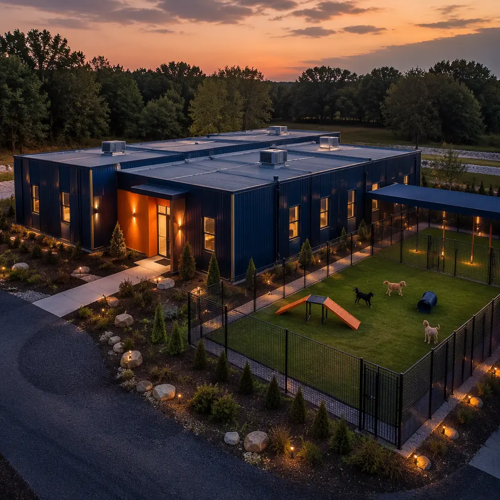

Pet care is one of the fastest-growing commercial building types in the United States, and it has a construction problem that modular delivery solves better than any other method. Americans spent more than $150 billion on their pets in 2024 — up from $103 billion in 2020 — and the services segment (boarding, daycare, grooming) grew to roughly $15 billion as pet ownership reached 66% of U.S. households. That demand is being met by franchise networks scaling from single locations to dozens: leading boarding and daycare brands now operate 200–600 locations each, with new builds running $1–2.5 million per facility. But a pet care facility is an unusually demanding building program — kennels generate 85–100 dB of barking, require wash-down plumbing in every suite, need 6–10 air changes per hour for odor control, and demand acoustic separation between play areas and resting dogs. These are precisely the controlled, repeatable assemblies that factory-built steel-frame modules produce best. A 6,000 sq ft modular pet care facility reaches opening day in 6–9 months at $150–250 per sq ft — against 12–18 months and $250–400 per sq ft for site-built — with acoustics, ventilation, and wash-down systems factory-installed and tested. This guide covers the space program, the engineering challenges, the franchise economics, and the planning checklist.

Why Pet Care Is a High-Growth Commercial Building Segment
Pet care services have crossed from lifestyle expense to structural consumer category. The American Pet Products Association estimates 66% of U.S. households — about 86.9 million homes — own a pet, and the services that surround pet ownership have outgrown the overall pet market every year since 2015. Boarding and daycare are the largest service lines: overnight boarding runs $40–60 per night in most metro markets and daycare $30–45 per day, and both operate at high occupancy during holidays, summer travel, and the post-pandemic return-to-office commute.
- Franchise scaling. The leading daycare and boarding brands grew from regional operators to national networks of 200–600 units by standardizing the building prototype — the same multi-site playbook our retail construction guide documents for store rollouts.
- Kennel-free demand. The industry shift from cage-style kennels to suite-style boarding and open play areas raised the bar for acoustics, ventilation, and supervision space — a building program, not a warehouse fit-out.
- Weatherproof revenue. Boarding occupancy spikes 30–50% during holiday weeks, making capacity the binding constraint — operators who can add suites in months instead of a year capture that demand.
- Investor interest. Private equity has consolidated pet care operators, and the building prototype is a core part of the roll-up thesis — repeatable facilities at predictable cost and schedule, exactly what factory production provides.
For operators, the business model is a location game: open the right facility in the right trade area and the unit economics work. Modular delivery removes the two variables that kill expansion plans — schedule slippage and cost drift — and replaces them with a fixed factory price and a production slot.
The Pet Boarding & Daycare Space Program
A modern pet care facility is a zoned building, not a big room with cages. The functional areas and their typical dimensions are defined by how dogs move through the day — intake, play, rest, grooming, and isolation — and each zone has distinct acoustic, ventilation, and plumbing requirements:
| Zone | Typical Program | Key Engineering Requirement |
|---|---|---|
| Lobby and check-in | Reception, retail, camera wall | Acoustic buffer between lobby and kennel zones |
| Kennel suites | 30–80 suites, 30–60 sq ft each | Wash-down drains, waterproof panels, sound-rated walls |
| Group play yards | 1,500–3,000 sq ft, indoor and outdoor | Slip-resistant flooring, 7–8 ft acoustic-rated partitions |
| Grooming and wash stations | 2–6 stations with tubs and tables | Floor drains, hot water capacity, exhaust at tubs |
| Isolation and medical | 1–2 negative-pressure rooms | Separate HVAC zone, negative pressure, dedicated exhaust |
| Staff and support | Office, break room, laundry, storage | Laundry and sluice for bedding and towels |
The zoning logic drives the module layout: high-noise zones (play yards, kennel wings) are grouped and acoustically separated from low-noise zones (lobby, grooming), with the isolation room on its own HVAC branch. Because the zones are standardized, the module design is engineered once and reproduced — the same repeatability that powers our quality comparison analysis of factory versus field construction.
Acoustics: The First Engineering Challenge
Barking is not a nuisance issue in a pet care facility; it is the defining acoustic design problem. A single barking dog peaks at 85–100 dB, and a kennel wing of 30 suites can sustain 90 dB for hours. The building must protect three audiences: resting dogs (stress reduction), staff working an 8–10 hour shift (occupational noise exposure limits start at 85 dB per OSHA), and neighboring properties (local noise ordinances). The acoustic strategy is layered:
- Sound-rated suite partitions. Kennel walls are built as acoustic assemblies — dual-layer gypsum on staggered studs with mineral wool — achieving STC 50+ ratings between suites, factory-assembled rather than field-framed.
- Acoustic separation of zones. Play areas and kennel wings are separated from the lobby and grooming by buffer zones and sound-rated walls, so customer-facing spaces stay calm.
- Absorptive ceilings. Acoustic ceiling tile with high NRC ratings in play and kennel areas cuts reverberation time, which is what turns individual barks into a sustained roar.
- Ventilation-path isolation. Ductwork is the hidden acoustic bridge — the HVAC design separates high-noise zones onto independent duct runs so sound does not travel through the air-handling system.
These are exactly the assemblies our acoustic performance guide covers — and the reason they work better from a factory is consistency: every suite partition is built to the same spec on the same line, then verified with a field sound test after installation.

Ventilation, Odor Control, and Wash-Down Design
Ventilation is the second defining system. ASHRAE 62.1 and local animal-care codes require 6–10 air changes per hour (ACH) in kennel and animal-holding areas — three to five times the rate of a typical office — because ammonia from urine and biological aerosols from fur and dander accumulate fast in confined spaces. The design response is a dedicated HVAC strategy:
- Zone-separated HVAC. Kennel, play, grooming, and isolation areas each get their own air-handling zone so odor and aerosols never recirculate into the lobby or staff areas — the zoning principles are detailed in our HVAC and indoor air quality guide.
- Negative-pressure isolation. The isolation room runs at negative pressure with dedicated exhaust to contain airborne pathogens — the same pressurization discipline used in veterinary clinics.
- Wash-down construction. Suite floors slope 2% to floor drains, walls carry waterproof fiberglass-reinforced panels to wainscot height, and all penetrations are sealed — the facility is hosed down daily, so the building must tolerate it.
- High-volume exhaust at grooming tubs. Grooming areas exhaust moisture, dander, and chemical vapors at the source, with makeup air supplied from clean zones.
Factory installation matters here because wash-down rooms and HVAC zones are plumbing- and ductwork-dense assemblies — the same argument that makes modular the default for wet-room programs like the ones in our veterinary clinic guide, where infection-control zoning drives the design.
Franchise Rollout and Phased Expansion
The fastest-growing pet care operators do not build one facility at a time; they build a prototype and repeat it. A franchise opening 10 locations per year needs identical, predictable buildings — same suite count, same play-yard layout, same mechanical systems — delivered on a rolling schedule. Modular production is built for exactly this: the engineering package is developed once, the factory tooling is amortized across the run, and each subsequent facility gets faster and cheaper as the design stabilizes. The multi-site economics mirror the franchise rollout analysis in our retail construction guide, and the repeat-prototype quality control is documented in our factory QC systems guide.
The operating economics compound the construction case. A 50-suite facility staffs 8–12 full-time equivalents across boarding, daycare, and grooming; labor is the largest operating cost, and the building layout determines how efficiently staff move between zones. A linear suite wing with a central wash and intake reduces daily walking distance and cleaning time versus a scattered layout, and the module grid makes that linear plan standard rather than an architectural accident. Industry benchmarks put facility-level EBITDA margins at 25–35% for well-run boarding operations, which means the revenue advantage from opening 6–9 months sooner is worth roughly $100,000–300,000 in incremental EBITDA in the first year alone.
Modular also enables phased expansion within a single site. A first-phase module wing opens with 40 suites while a second wing is still in production; when demand justifies it, the second wing arrives on a truck and is connected in days — without relocating dogs, shutting down the facility, or disturbing the operating zones. For an owner-operator, that means the building grows with the customer base instead of betting the full build-out on year-one occupancy projections.
Cost & Timeline Benchmarks
The unit economics of pet care favor speed: a facility earns revenue only when suites are occupied, and the seasonal demand spikes are unforgiving. The benchmarks below reflect 2026 data for a 6,000 sq ft boarding-and-daycare facility with 50 suites and two play yards:
| Metric (6,000 sq ft facility) | Modular | Site-Built |
|---|---|---|
| Design and permitting | 2–3 months (prototype adapted) | 3–5 months |
| Construction | 3–5 months (factory + site in parallel) | 9–13 months |
| Furnishing and licensing | 1–2 months | 1–2 months |
| Door-to-opening | 6–9 months | 12–18 months |
| Construction cost per sq ft | $150–250 | $250–400 |
| All-in cost (6,000 sq ft) | $0.9–1.5 million | $1.5–2.4 million |
A 50-suite facility at 80% average occupancy generates roughly $1.2–1.8 million in annual revenue at $45 per night blended boarding rates — which means the 6–9 month schedule advantage is worth $400,000–900,000 in earlier revenue on top of the $600,000–900,000 construction saving. Our cost per square foot guide provides the underlying benchmarks, and our project timeline analysis shows how the parallel factory-and-site schedule is achieved.

Planning Your Pet Care Facility: A 6-Step Checklist
- Lock the operating model first. Boarding-only, daycare-only, or hybrid determines the suite count, play-yard area, and staffing zone sizes — the space program follows the business model.
- Survey the trade area for demand. Household density, dog ownership rates, and competitor capacity in a 15-minute drive radius set the facility size — the same site-selection logic franchise brands use.
- Specify acoustics and ventilation as contract line items. STC-rated partitions, 6–10 ACH HVAC zones, and negative-pressure isolation must be in the factory spec, not discovered during commissioning.
- Confirm the wash-down program. Floor slopes, drain locations, waterproof panels, and hot water capacity for daily hosing are defined by the manufacturer's wet-room engineering — get them in writing.
- Plan the module delivery and crane day. Facility sites are often in retail centers with access constraints — assess delivery corridors early using our transportation and logistics guide.
- Structure financing around the production schedule. Construction draws follow factory milestones; align the draw schedule with production using our financing guide, and confirm warranty coverage with our warranties guide.
Operators, franchise developers, and investors evaluating pet care facilities should also review our veterinary clinic guide for the adjacent medical-animal program and our acoustic performance guide for the sound-rated assemblies that make a boarding facility leaseable in a mixed-use neighborhood.
